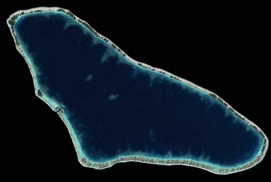
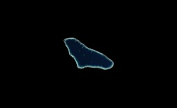
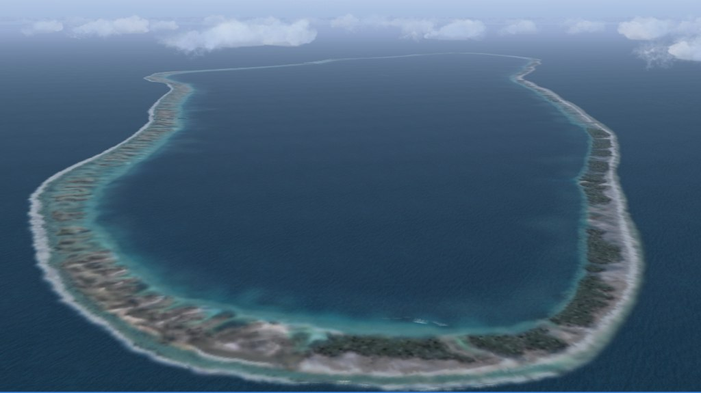

French Polynesia Tuamotu Archipelago FS9/FSX Addon Scenery
Group B
Taenga

Taenga forms a medium-sized atoll, located in the northeast 35km of Makemo. The information can hardly be obtained about Taenga. I inferred about this atoll relative to the scenery that I designed. The shape of the atoll is triangle. There is one passes in the south of the atoll; it connects the lagoon with the open sea. The southwest of the atoll lies in the wide reef; though the reef in the south starts developing and becoming motu, the west side is submerged.
Taenga forms a medium-sized atoll, located in the northeast 35km of Makemo. The information can hardly be obtained about Taenga. I inferred about this atoll relative to the scenery that I designed. The shape of the atoll is triangle. There is one passes in the south of the atoll; it connects the lagoon with the open sea. The southwest of the atoll lies in the wide reef; though the reef in the south starts developing and becoming motu, the west side is submerged.

Size of Taenga relative to Rangiroa

Size of Taenga relative to Rangiroa
The southeast corner view

The southeast corner view